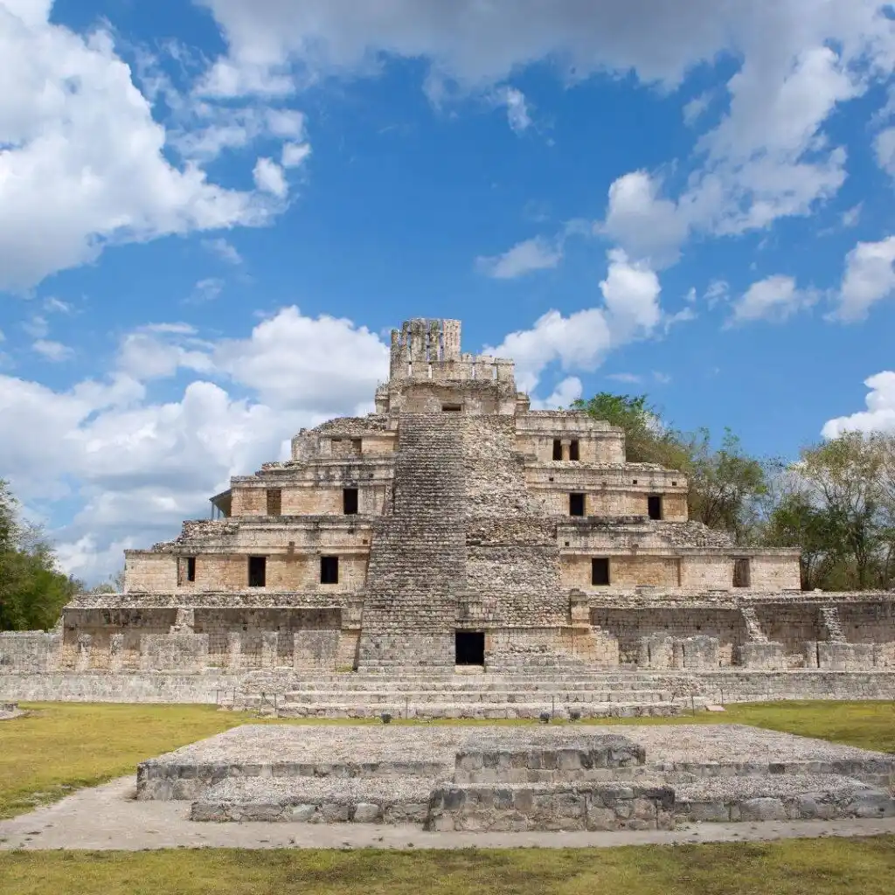

This site highlights the most important ancient ruins of Mexico and encourages visitors to explore them. It provides historical context, cultural insights, and practical tips for visiting, including travel recommendations and accessibility information.
About
Welcome to our journey through Mexico’s most remarkable ancient ruins. This website is dedicated to exploring the rich history, culture, and architecture of some of the most iconic archaeological sites across the country.
Whether you are a history enthusiast, a student, or a curious traveler, here you will find detailed information, stunning visuals, and interactive features to deepen your understanding of these incredible places.
Our goal is to inspire appreciation for Mexico’s heritage and encourage visitors to discover these wonders firsthand. Join us as we uncover the stories behind the stones and the civilizations that built them.
Notable Ruins
Visit tips
- Step into comfort – Wear sturdy, comfy shoes so every step through history is a pleasure.
- Dress for the journey – Light, airy clothes keep you cool under the warm Mexican sun.
- Stay refreshed – Bring enough water to sip as you wander between ancient stones.
- Shield yourself from the sun – A wide-brimmed hat, sunscreen, and sunglasses are your best friends.
- Catch the magic early – Arrive in the morning for soft light, cool air, and peaceful paths.
- Bring your lens to life – Capture the beauty and details (where photography is allowed).
- Tread with care – Respect restricted areas and help preserve the ruins for generations to come.
- Listen and imagine – Let local guides’ stories transport you to the time these walls were alive.